Conviviale de Chantilly

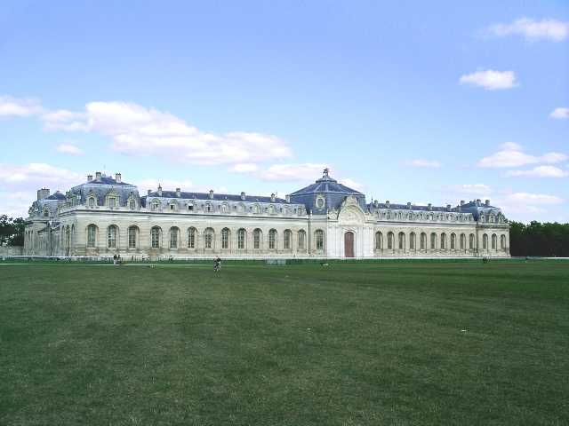
Petite conviviale à Chantilly, sur l'hippodrome, les Grandes Ecuries à portée de main (en 1719, Louis Henri de Bourbon, septième Prince de Condé qui, d’après la légende, croyait à la métempsychose et pensait se réincarner en cheval, a fait construire ces écuries dignes de son rang...).

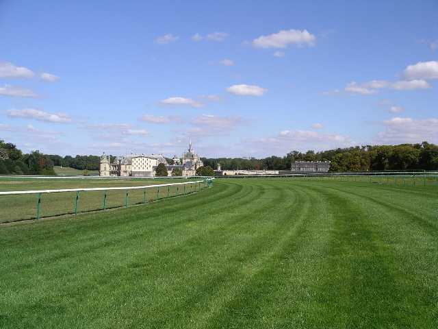
Une photo pour que vous puissiez vous imaginer à donf sur votre pur-sang avec le martèlement des sabots de la horde furieuse qui résonne dans tous vos organes et, paisible, le chateau en toile de fond.

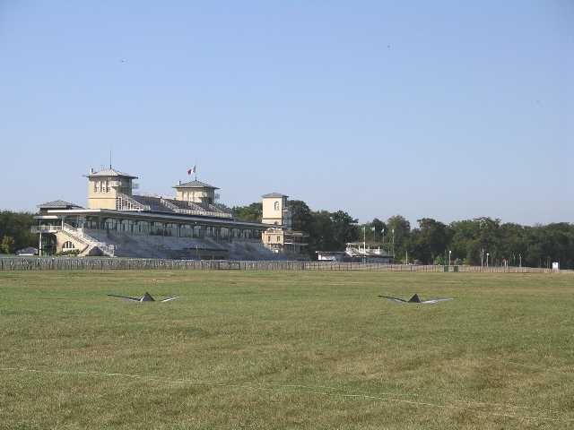
Les tribunes sont vides aujourd'hui, pourtant, il y a du spectacle sur l'immense pelouse !

A l'arrivée, le camp est déjà en partie monté dans l'immense surface au centre de l'hippodrome...

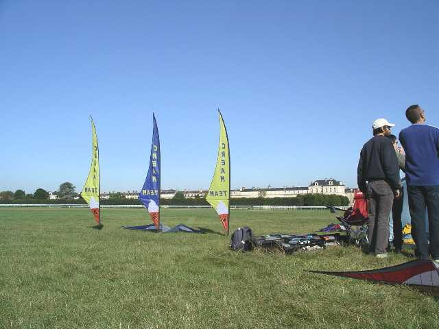
...et les bannières du "Cream Team" sont fièrement dressées !

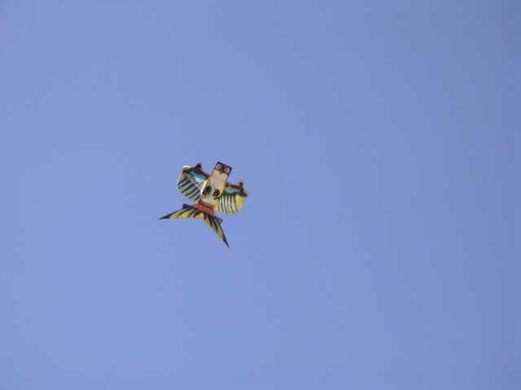
Il y a même des monofils comme cette chouette chinoise...

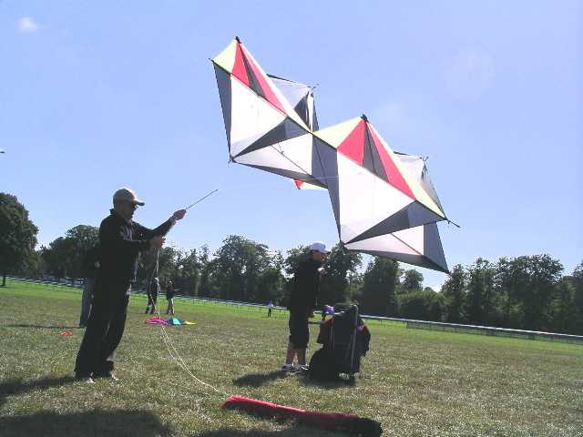
...ou ce Pellibox solide.

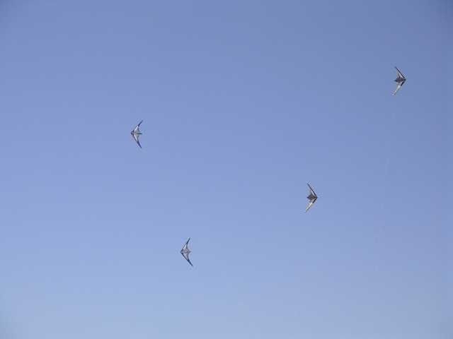
Mais les pilotables ne sont pas de reste, et les individuels ou les teams commencent à s'entraîner !

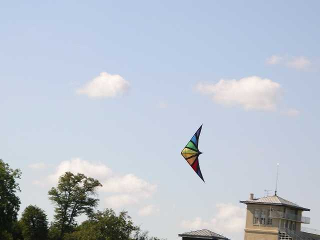
Des NorthShores viendront aussi "sonoriser" la journée. Pour un show, c'est bien. Pour le plaisir, c'est comme les tam-tams, faut aimer...

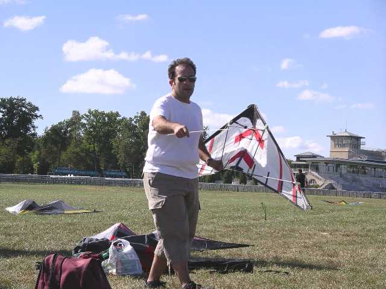
On verra aussi un cerf-volant de vitesse d'un maître chinois dont je n'ai pas retenu le nom. Il volera peu, faute d'un vent soutenu.

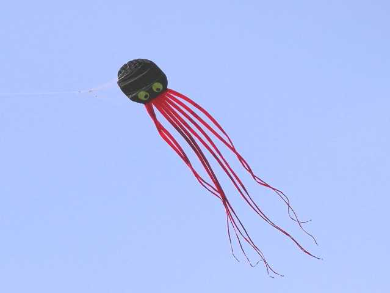
Les monofilistes sortent une pieuvrette noire et rouge, mais qui n'a pas besoin, comme celles des Grands Maîtres, de Flowform pour la tenir en l'air.

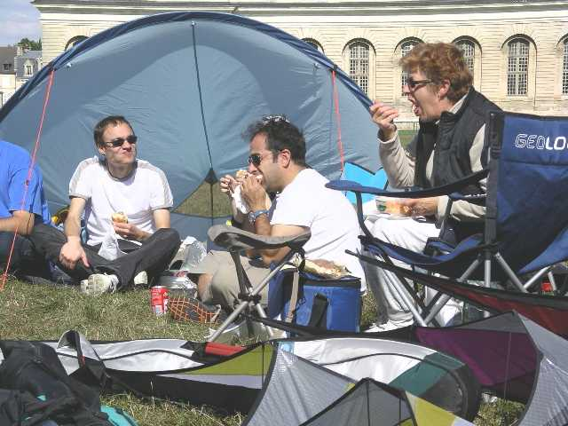
Mais c'est l'heure du déjeuner, faut pas oublier de reprendre des forces, l'après-midi sera longue !

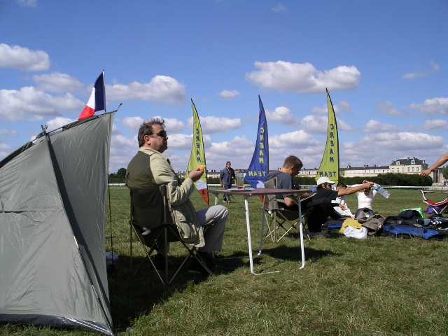
Philippe, lui, a amené du matériel, tente, drapeau français, fauteuil, table, sans oublier la bouteille de rosé et le verre, et un vrai verre en verre !

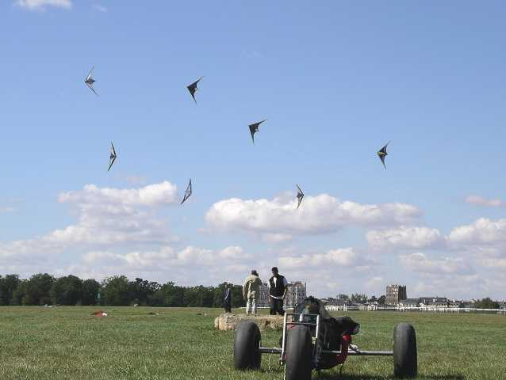
Pendant que les buggyistes se reposent faute de vent décoiffant, un petit mégateam s'improvise, et ça ne marche pas mal...

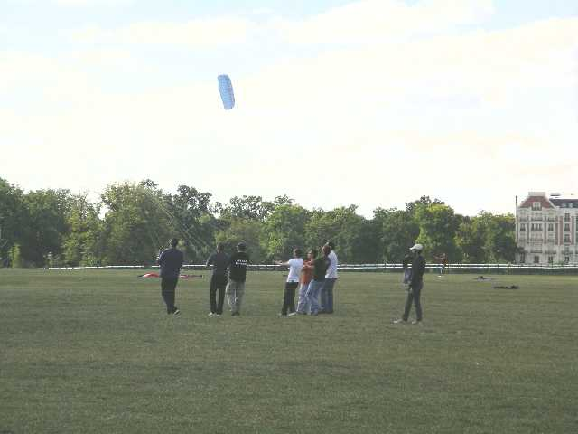
Au sol, on se passe les consignes... et GOOO !

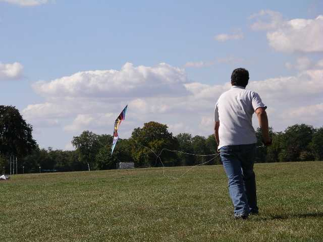
Les individuels se donnent aussi du mal !

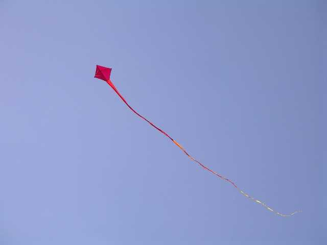
Je retrouve des vieux copains de Bagatelle, comme Wang , ou Pierre qui a toujours des cerfs-volants intéressants...

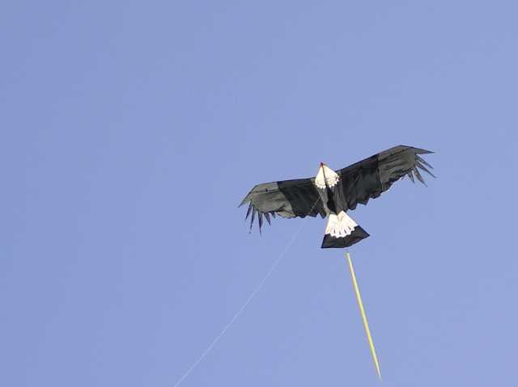
Wang se partage toujours entre le boomerang (il a créé le Boom...Wang !) et le cerf-volant. Il est venu avec sa bannière indienne et son aigle...

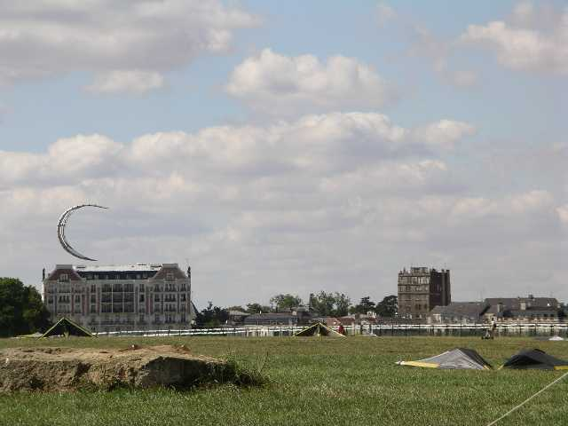
Les rouleurs continuent à rouler, celui-ci sur un board, la pelouse est suffisamment lisse !

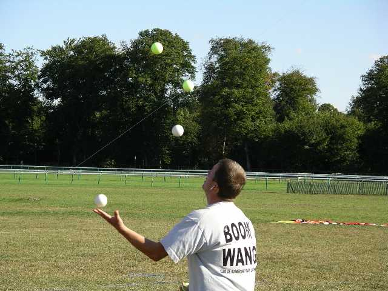
Il y a même un jongleur, lui, il sait jongler avec 6 balles, sauf quand il en perd...

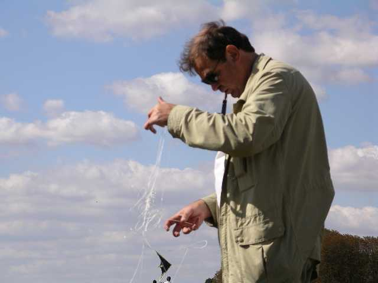
Bon, c'est pas tout, avant de partir, faut ranger, je suis pas sorti !
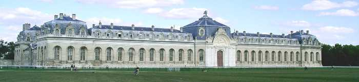
Conclusion : une conviviale sympa, un cadre grandiose, pas de sono, je reviendrai !